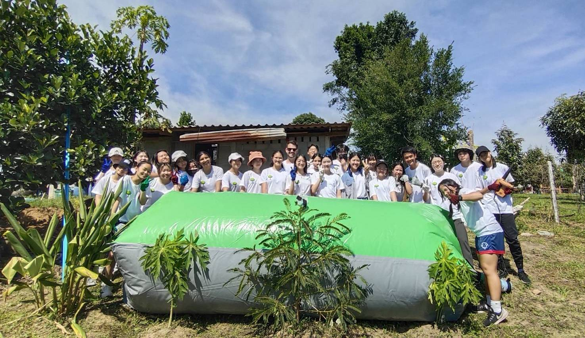

Biogas Balloons
One hour of labor for ten years of renewable energy.
Learn More

The name “Between The Roots” comes from the common phrase “reading between the lines”, because at BTR, we care about every detail, no matter big or small.
BTR’s mission is to strive for the three roots to help as many individuals and communities as possible. The three roots are advocate, act, and assist. We advocate for sustainability, acting upon it through environmental innovations, and assist communities in elevating their lives while protecting the environment.
One hour of labor for ten years of renewable energy.
Learn MoreFrom organic waste to a solution to drought.
Learn MoreThe Advocacy Team of BTR strives to advocate for society’s social and environmental problems, through writing articles, creating YouTube videos, and spreading awareness.
Learn More
A recap of BTR’s first community outreach trip at Pa Deng Village in Phetchaburi, Thailand in November 2023.
Read more
https://www.bangkokpost.com/learning/community/2668111/turning-waste-into-fuel
Read more
An interview between Gunn and Mr Koson, where the latter discusses energy and waste management in Thailand.
Read moreBetween The Roots is not just a foundation or an organization, but a community.